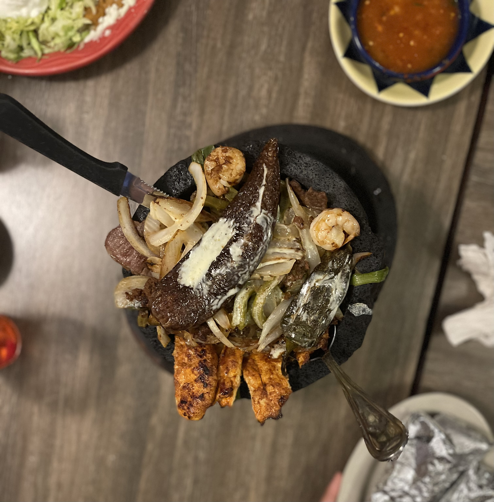
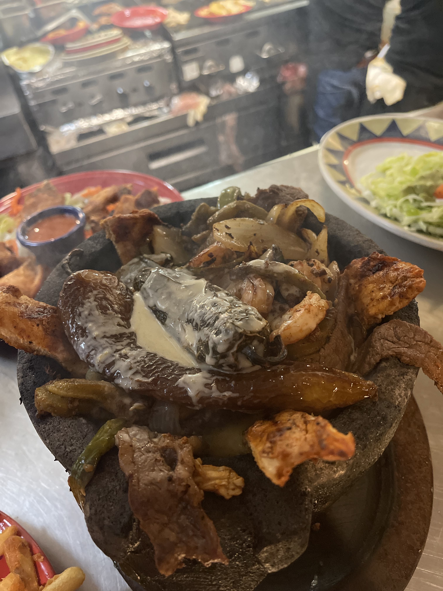
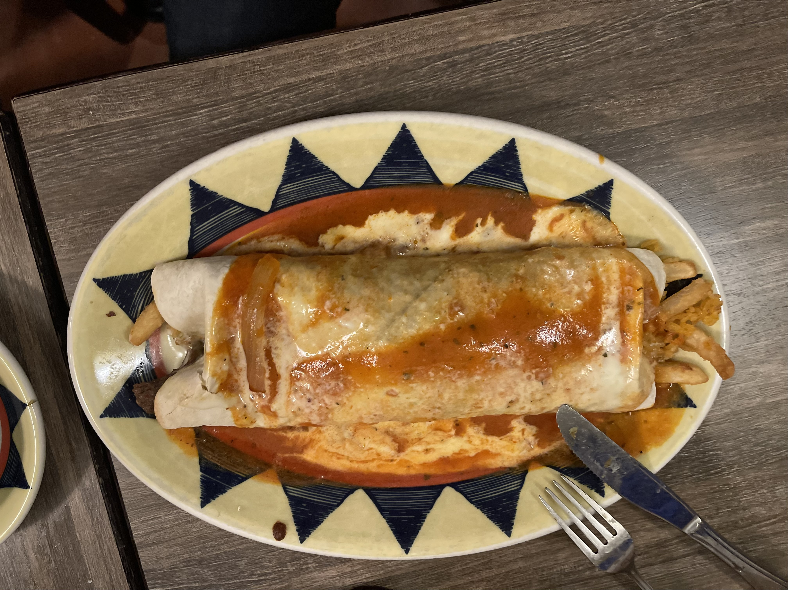
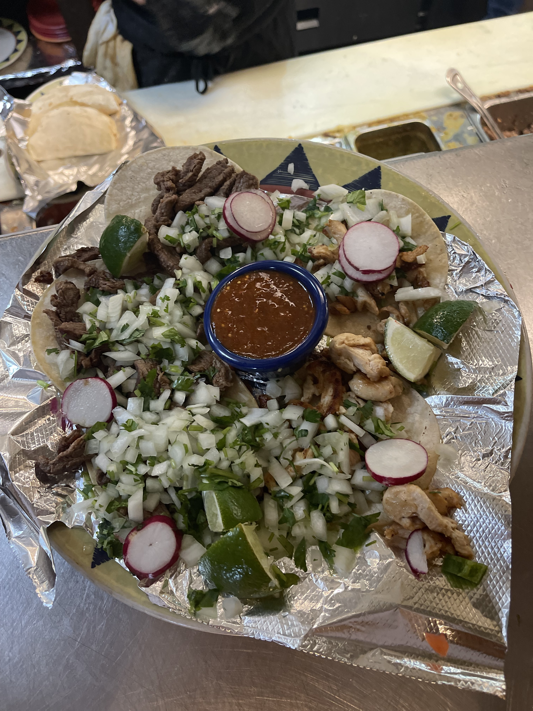

My personal favorite that is a house dish is "The Molcajete". The Molcajete is a big rock bowl that is very traditional in Mexican culture. The Molcajete is my favorite thing to eat when I share with another person. The Molcajete has Grilled Steak, Grilled Chicken, Shrimp, Chroizo which is Mexican sausage, cactus which are called "nopales", one fried banana pepper and one fried jalepeño. This is topped with cheese dip as well and there is Mexican cheese on the bottom of the Molcajete and whenever you eat it, you can scrap the cheese and make tacos with everything else. The meal also comes with flour or corn tortillas. I love corn tortillas and I reccomend those. There is another plate that has rice, beans, lettuce, sour cream, guacamole, and Mexican cheese. This meal is $26.00!
 The next best house special is the "Grande Burrito". The Grande Burrito is made with a 12 inch tortilla that is warmed up and it comes with any choice of meat. You can decide to have Grilled Veggies, Grilled Steak, Grilled or Shredded Chicken, Shreded Beef, Ground Beef, and Pork. Inside it has the meat, rice, refreied beans and cheese. It is topped with cheese dip and red burrito salsa which is mild and not spicy at all. You can change the rice for white rice instead of the Mexican rice. The beans can also be changed into Pinto Beans, Black Beans, or Veggie Beans. The Grande Burrito is $14.99!
Another one of our popular house dishes is the "Mexican Street Tacos". The Mexican Street Tacos are 5 small corn tortillas and you can decide whether it can be Pork, Grilled Chicken, or Grilled Steak. We also added Tacos de Al Pastor which are super good because they are the same as the regular street tacos but these are marinated pork with pineapple which are good but the ones my mom makes are better. The tacos come the traditional way with cilantro, onions, limes, radishes, and tomatillo salsa which is spicy. The Mexican Street Tacos are $13.99!
